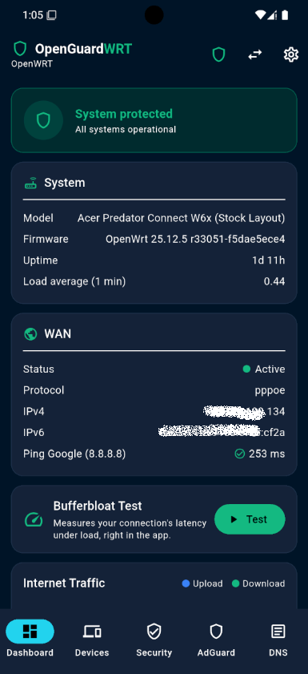
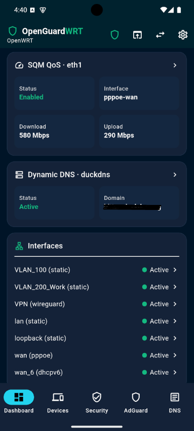
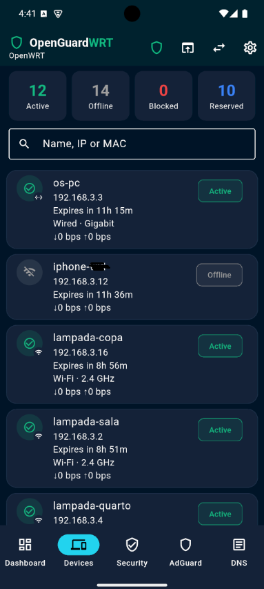
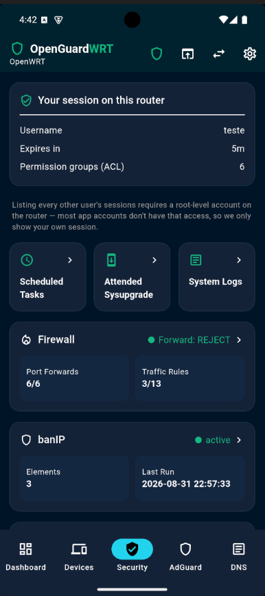
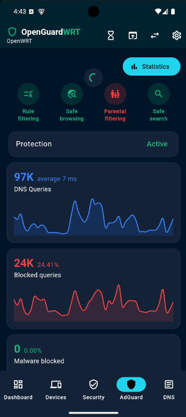
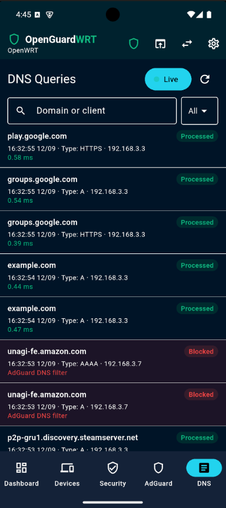

Painel Android somente leitura para o seu roteador OpenWrt e AdGuard Home — direto no seu aparelho, sem conta, sem nuvem, sem servidor no meio.

Uma interface moderna e direta pra acompanhar sua rede, sem precisar abrir o LuCI.
CPU, RAM, armazenamento, tráfego de internet e status da WAN, atualizados a cada poucos segundos.
Todo dispositivo conhecido pelo DHCP, com filtro por categoria, QR code de conexão e senha da rede.
Firewall, WireGuard, banIP, ACME, MultiWAN e mais — tudo somente leitura, com reinício opcional do firewall.
Proteção, filtros, estatísticas e log de consultas DNS ao vivo, com upstreams e tempo de resposta em destaque.
Todo dado pessoal visível nas capturas (IP público, nomes de dispositivo, domínio de DDNS) foi borrado antes da publicação.





Sem anúncios, sem assinatura, sem dado coletado em nenhum dos dois planos.
Feito pra funcionar com uma instalação padrão de OpenWrt — nada de pacote exótico.
Com a API ubus/LuCI acessível — na sua rede local, ou por VPN/túnel próprio.
Opcional — só é usado nas telas de DNS e proteção. O resto do app funciona sem ele.
banIP, mwan3, ACME, SQM, DDNS, Bandix e WireGuard — cada um só aparece se estiver instalado.
Usuário e senha do roteador ficam cifrados no Android Keystore, nunca em texto puro.
O app está em teste fechado no Google Play. Participar é rápido:
Obrigado a todo mundo que já está testando — cada roteador diferente, cada firmware, cada combinação de pacotes instalados é o que torna esse painel confiável pra além do meu próprio setup. 💙
Não, por padrão. O app é somente leitura — a única exceção é reiniciar o firewall ou bloquear/desbloquear um dispositivo no AdGuard, e mesmo assim só depois de você ativar "Permitir alterações no roteador" nas Configurações.
Não. O app fala com a API ubus/LuCI que já vem em qualquer instalação padrão de OpenWrt. AdGuard Home, banIP, mwan3, ACME, SQM, DDNS, Bandix e WireGuard são todos opcionais.
Não. Não existe servidor nosso — o app fala apenas com o roteador que você mesmo configura. Suas credenciais ficam cifradas no Android Keystore e nunca saem do aparelho. Veja a política de privacidade completa.
Sim, o painel completo é gratuito pra sempre com 1 roteador salvo. Um desbloqueio Pro opcional (compra única, sem assinatura) libera roteadores ilimitados, widgets, alertas e backup criptografado.
Português, inglês e espanhol — dá pra trocar a qualquer momento em Configurações.
Abra uma issue no GitHub ou entre no grupo de testes e comente por lá.